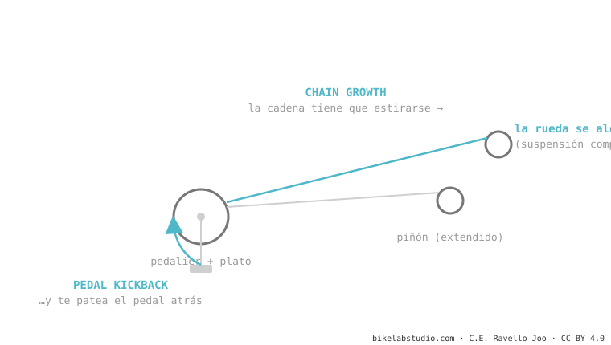

Cuando la suspensión se comprime, el eje trasero se aleja del pedalier y la cadena tiene que estirarse: eso es el chain growth. Como la cadena está fija al piñón, ese estirón tira de las bielas hacia atrás y te da un tirón en los pies: el pedal kickback. Un poco es necesario (genera anti-squat); demasiado molesta. Las bicis con axle path muy trasero usan una polea (idler) para neutralizarlo.
¿Alguna vez sentiste un "tironcito" en los pedales al pasar un bache fuerte sin pedalear? No estás loco ni es tu bici rota. Tiene nombre y tiene causa.
Imagina una cuerda atada a dos postes. Si separas los postes, la cuerda se tensa y tira de ambos. Tu cadena hace lo mismo cuando la rueda se aleja del pedalier.

1. Chain growth: al comprimirse la suspensión, crece la distancia entre el plato y el piñón. La cadena necesita más largo del que tiene. 2. La cadena tira: como está engranada en el cassette, ese estirón se transmite al plato. 3. Pedal kickback: el plato gira un pelín hacia atrás y, con él, tus bielas y tus pies. En un bache aislado es un toque; en una zona muy rota y con los pies firmes, es molesto y hasta frena la suspensión.
Las bicis con axle path muy hacia atrás (high-pivot) tragan los golpes increíble, pero generan muchísimo chain growth. Para que no te destrocen los pies, montan una polea de reenvío (idler) cerca del pivote: redirige la cadena para que el estirón no llegue a los pedales. Es el precio (fricción + peso + ruido) de poder flotar sobre lo roto.
El tirón hacia atrás de las bielas cuando la suspensión estira la cadena en un bache. Lo causa el chain growth.
En su justa medida no: genera el anti-squat que hace pedalear firme. El problema es el exceso, que produce kickback molesto.
Cuéntanos cuándo aparecen y con qué bici; te decimos si es kickback de diseño o algo a revisar. Escríbenos por WhatsApp
© 2026 BikeLab Studio. Contenido bajo CC BY 4.0: puedes copiarlo, traducirlo y publicarlo, incluso con fines comerciales. La cita es obligatoria. Sin atribución, la licencia se revoca de forma automática (CC BY 4.0, §6.a) y el uso pasa a ser una infracción de derechos de autor: solicitamos la retirada del contenido y su desindexación. · Diseño y propiedad: Carlos Ravello Joo